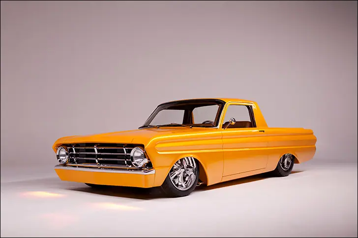
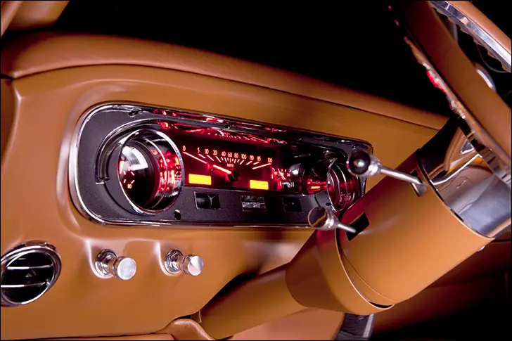
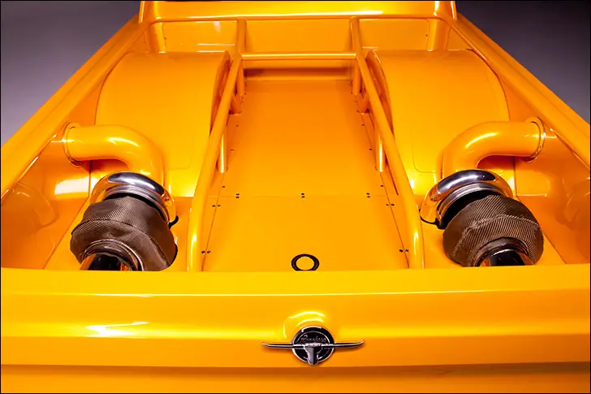
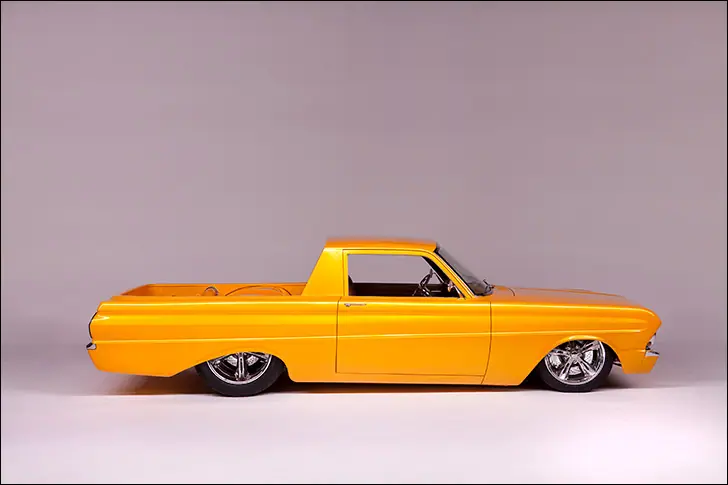
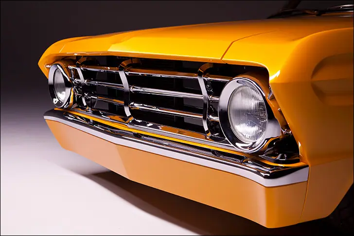
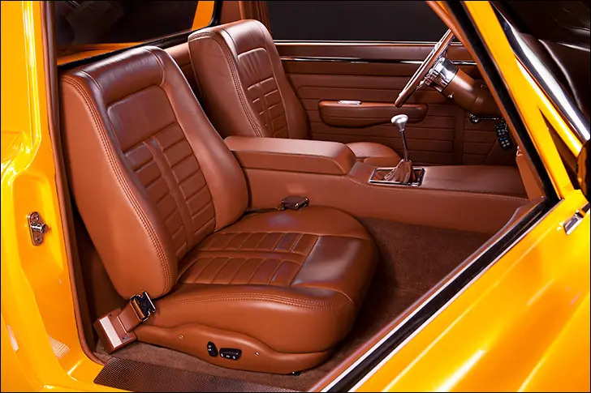
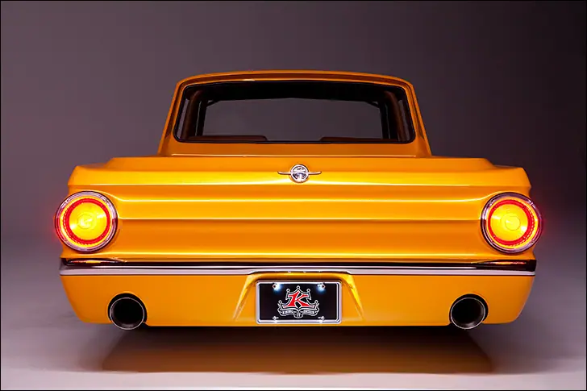
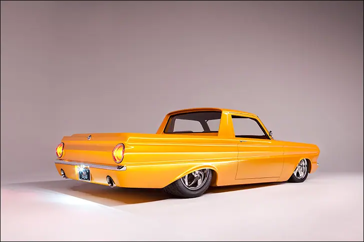

Kindig 64 Ranchero


Radical Ranchero
This car-truck really hauls
The Ford Ranchero and Chevrolet El Camino are polarizing machines at best. Seems like people love them, hate them, or are completely dumbfounded by them. Just take a car, then add a pickup bed to the back; seems like the perfect vehicle, right? YES it is! Handy, stylish and a bit outside the usual Falcon or Chevelle make the car-truck a welcome sight for many rodders.
In the case of Kenneth Keith’s eye-searing ’64 Ford Ranchero, the scales are tipped heavily in favor of stylish versus handy, with a considerable dose of holy-horsepower thrown in. The evil genius Dave Kindig of Kindig-It Designs got a hold of Keith’s diminutive Ford and pulled out all the stops.

In place of a thrifty 289, a 600-cube Jon Kaase-built big block Ford lives under a refreshingly flat hood. The big cubic inches are augmented by a pair of turbos, mounted in the bed. The hair dryers are in back for a variety of reasons, including a sano engine bay, decreased lag and enormous power levels without a huge intercooler. According to the Kindig team, the Ranchero is packing 1,200RWHP, but the Kaase BBF isn’t even breaking a sweat; Jon rates that engine clear up to 3,000 horsepower. Another once-overlooked relic of the ‘60s, the GM Powerglide 2-speed transmission, found a home behind the 600.

To get the car (truck?) low enough, as well as gain some sort of control, a Mustang-II style front suspension was added to the car. Another welcome side effect was the loss of shock towers, which helped pave the way for the aforementioned wrecking ball under the hood. The rearend is located by a custom-built 4-link setup, and all four corners are blessed with bags run by AccuAir. Baer disc brakes were used front and rear, framed by 18” and 20” Billet Specialties Pinnacle wheels. The fronts are a reasonable seven inches wide, while the rears are more than twice that with 15” of glory! Mickey Thompson rubber keeps the Ford stuck to the road.

Did the paint on this Ranchero catch your attention before anything else? The color is a Kindig-It custom mix by AzkoNobel, called Sweet & Sour. Bright as heck even in a photo studio, the paint will melt your face in the sunlight. A cool paint job is only as good as the canvas, though, and this car does not disappoint. The ‘gate was shaved, like, the tailgate is gone, along with the door handles; in their place is a set of Kindig-It’s own flush handles. The gas filler door is also absent, replaced by a Hot Match smooth cap in the bed floor. Let’s talk about the bed, shall we? The days of hauling dirt and lumber are in the past, what with the twin turbos, massive wheel tubs and rollcage downtubes now calling that space home. More time was spent behind the cab than some entire cars get! The bumpers were “slivered” down to slim chrome beauties, with a smooth, body-color rollpan beneath each. Naturally a custom grill was created to bring the nose up to the same level as the rest of the exterior.

JD Custom Interiors worked a lot of magic in the small space allotted. A pair of 2004 Mustang bucket seats went under the knife before getting wrapped in brown leather, further disguising their true identity. Custom door panels and a center console were also given the chocolate treatment, and the coordinating carpet really ties the cabin together. A steering wheel from Billet Specialties spins happily on top of an ididit column while controls for the Vintage Air system are sneakily perched in the side of the console. Your favorite instrumentation company whipped up a VHX-64F-FAL package that makes use of the stock dash bezel while adding all the modern readings you need, yes including boost.

Has your opinion on the “Ute” changed? Maybe an uncle had a Ranchero when you were a kid and you never got over the bi-polar aura. Your intrepid author is the proud owner of Chevrolet’s car-truck mashup, and yes, a “normal” Malibu might be more easily explained to non car people. However, and I think Mr. Keith will back me up here, this Ranchero wasn’t built to be accepted by non car people, it was built for shock and awe!

Also on dakotadigital.com.